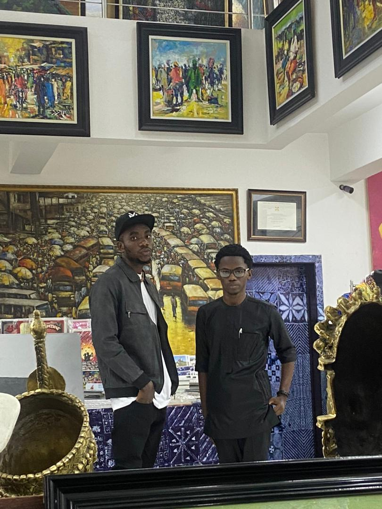
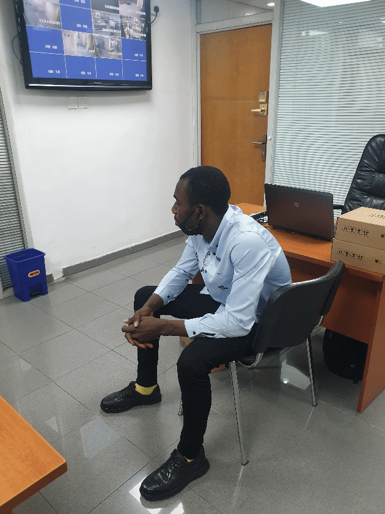

16 Osho Drive Olodi Apapa
Lagos State, Nigeria
Mobile: +234-8035788488
Email: hamzalshaibu@gmail.com
Date of birth: 12 May 1999
Place of birth: Lagos
Gender: Male
Marital Status: Single
State of origin: Edo State
Religion: Islam
A technically minded Computer Operator who has extensive experience of operating multipurpose, multitasking computer systems. Hamza is someone who will always make the most efficient use of computer and its peripheral equipment. Has the ability to install and configure hardware and software, administer User accounts, and manage disk usage in any fast paced and multi-facades working environment. On a personal level, has the ability to think clearly, logically and make split second decisions. Right now, he would like to work for a company that is looking for the best and brightest to join them.
FRASER SUITE HOTEL (CBD ABUJA, NIGERIA)
Position held: IT Support
Free CV template by reed.co.uk
Key Responsibilities
IT Administration
Software support
Hardware/Software Installation
Joy Dabby Café (Apapa, Lagos)
Position held: Café Administrator
Key Responsibilities
Graphic Designer
Server support
Document management
COMMAND GUEST HOUSE (APAPA)
Position held: Receptionist/IT Technician
key Responsibilities
Attending to customers (including Hotline)
Arranging taxis and booking tickets
Graphic Designer/Content Creator
System Administration
Technical support
SOURCE AV TECH (VICTORIA ISLAND)
Position held: Technical Manager/Marketing
IT Service Installation (Physical and Virtual)
Site surveying
Installation of video conferecing equipment
Ensuring electrical safety standards
Repairs, configure and troubleshooting of computer pepherals
Sales of IT equipments
HYPERLINK TECHNOLOGY (SURULERE LAGOS)
Position held: IT Support
CCTV Installation/Maintainance
WLAN/LAN infacstructure provider
Fiber cable running
Site surveying
Server room maintainance
Installation of video conferecing equipment
Ensuring electrical safety standards
Repairs, configure and troubleshooting of computer and IT pepherals
Available on request